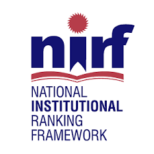
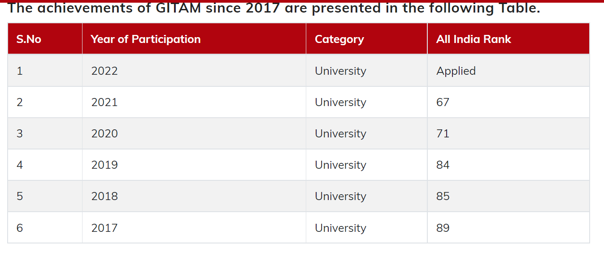

 The GITAM : Gandhi Institute of Technology And Management, a Category – I Deemed to be University has been voluntarily participating in the India Rankings (NIRF) since 2017. The NIRF is an initiative of Ministry of Education (MoE), formerly known as MHRD, Govt. of India which rank the institutions in our country across various disciplines, under a given framework. Ranked 1201+ World University Rankings 2022, 401–600th Impact Rankings 2022, 401+ Young University Rankings 2022. The institute is ranked 42nd among the business schools in India including government and 27th rank in among private business schools, 9th in South India and 6th among private business schools by The Week Magazine November 2019 rankings. The Institute is also ranked 8th in the category of Top Business Schools of Eminence and stood 1st in the private business schools in Andhra Pradesh by CSR-GHRD B-School Survey November 2019. Ranked 49th Best Engineering College in India - by Times Top Private Engineering Institute Rankings 2019 Ranked 74th Best Engineering College in India - by Times Top 100 Private Engineering Institute Rankings 2018.
